Street · California · 22 photos
San Francisco & Los Angeles
Two Californias: San Francisco from Twin Peaks, Chinatown lanterns, the Golden Gate at dusk; Los Angeles at Union Station, Disney Hall, the freeway and the piers at night.
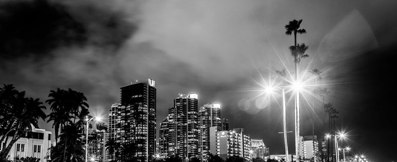
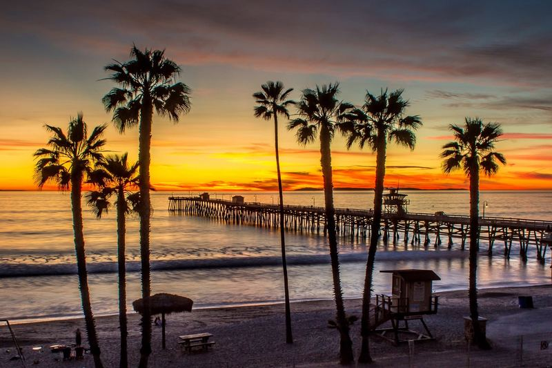
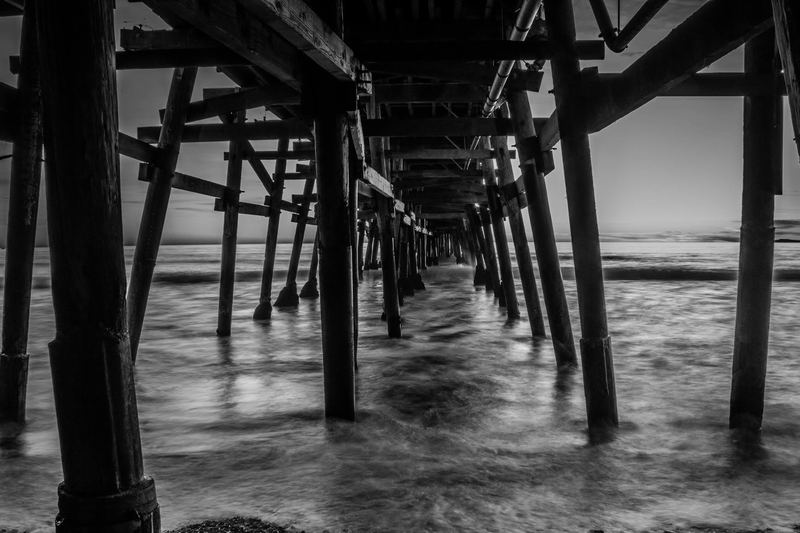

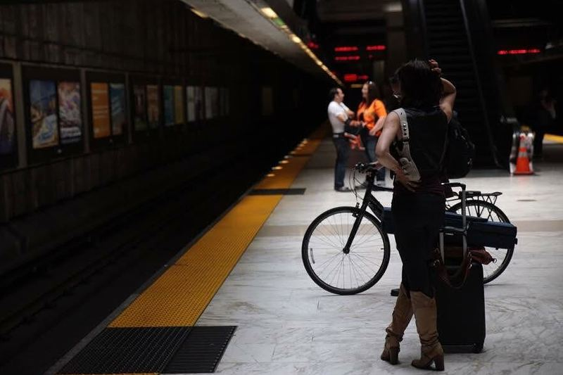
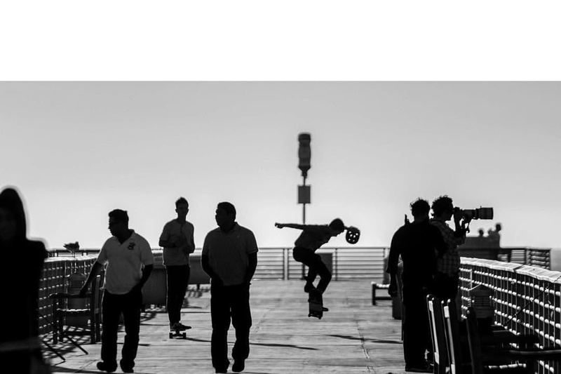
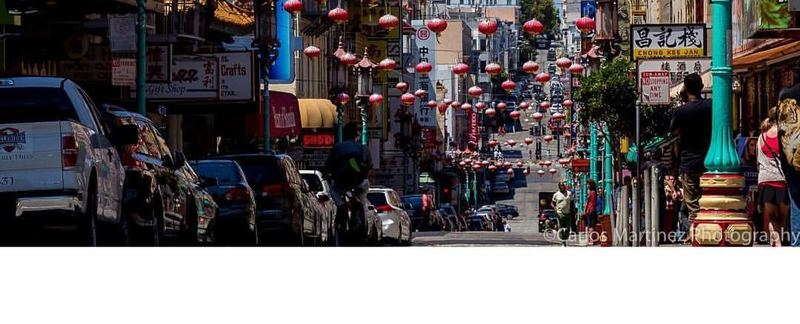
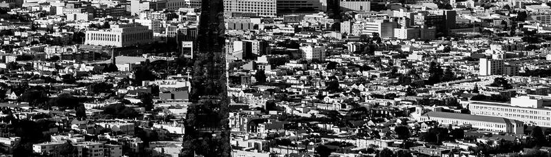
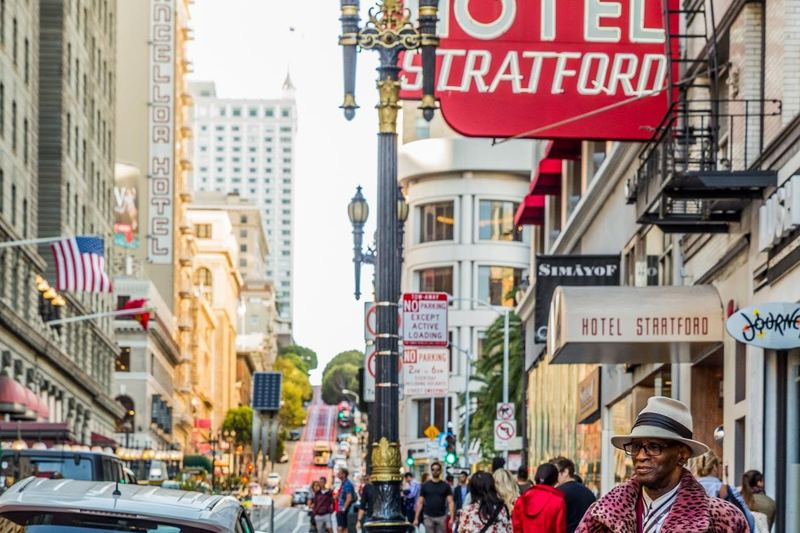
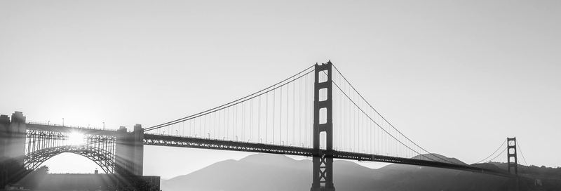
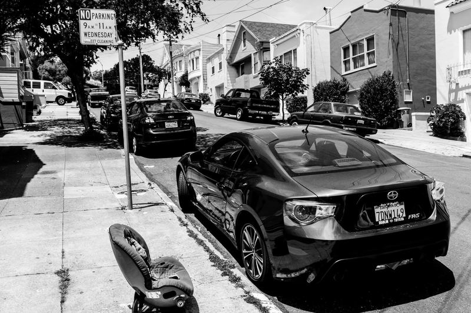
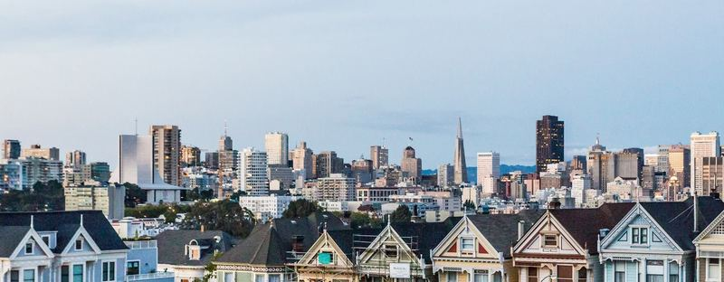
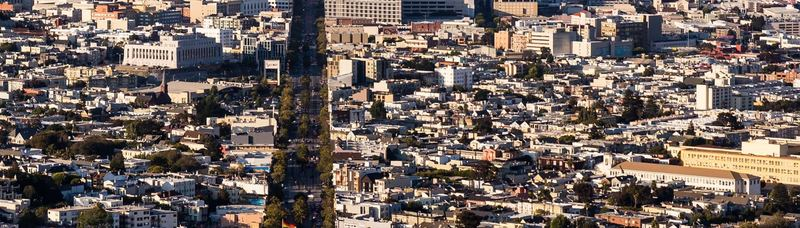
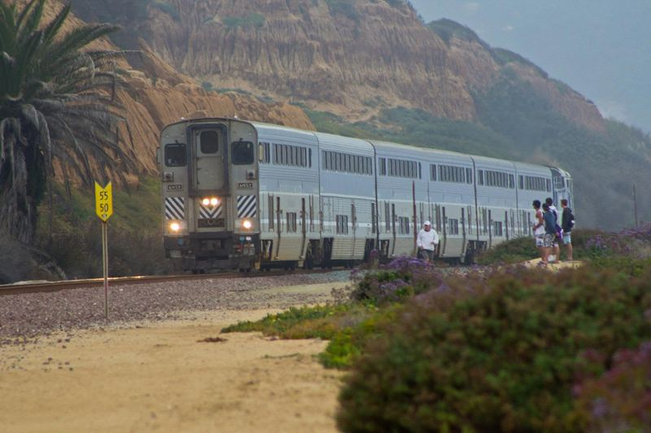
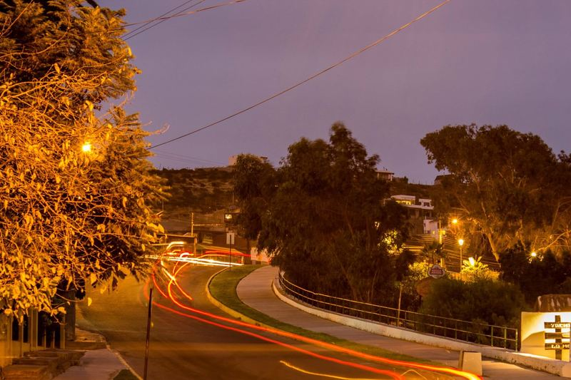
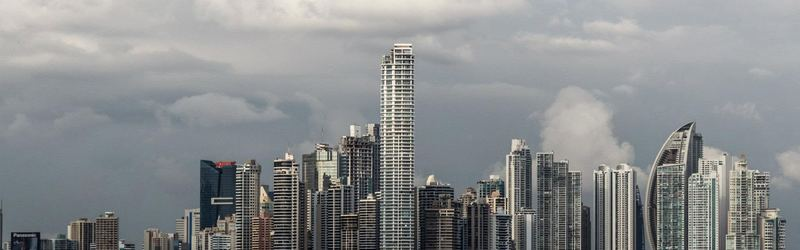
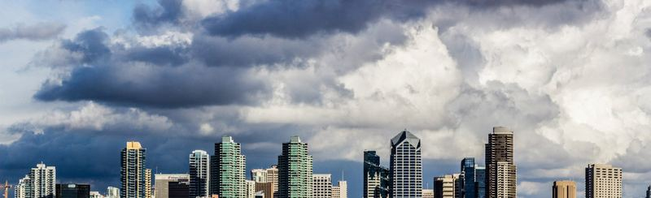
Need coverage like this?
Motorsport, events, aerials and commercial work — in Chile and abroad. Archive images available for licensing.
License this event Get in touch WhatsAppMore galleries
Playas de Tijuana
Las Vegas Nights
WRC Rally Chile 2019
Rally Raid — Atacama Desert
Grand Prix of Long Beach 2018
ISDE Chile — Six Days of Enduro
Mountain Bike Enduro — Chile
Opening Day at Del Mar
St. Patrick's Day Parade — Hermosa Beach
Lebowski Fest LA 2013
On the Poker Tour
Live Music
Portraits
Aerial & Drone
Andes & Glaciers
Coast, Travel & Wildlife